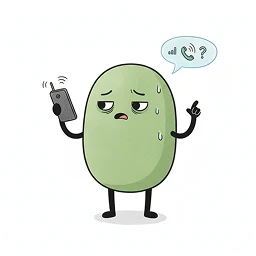
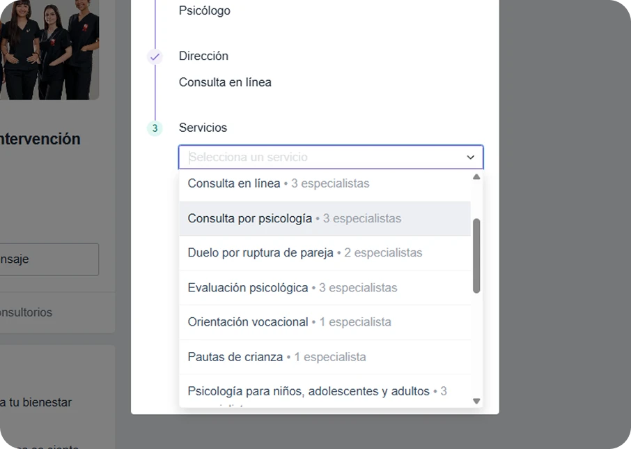
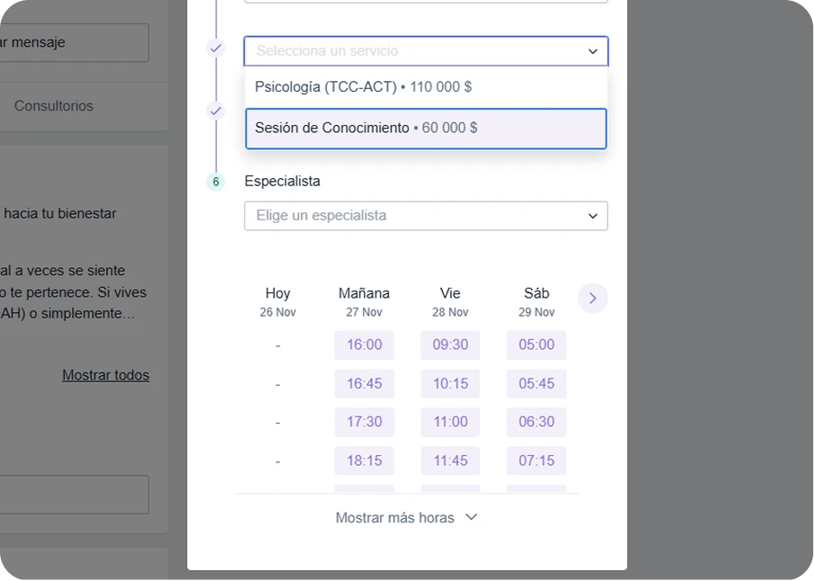

Tu bienestar no puede esperar más: Inicia hoy mismo
Recibe atención humana por WhatsApp en menos de una hora y asegura tu conexión con la especialista ideal.
¡OFERTA EXCLUSIVA! · Ruta de Atención Personalizada por solo $60.000
¡45% de descuento en tu primera sesión.!
Define tu ruta de atención por solo $60.000.
No pierdas tiempo ni dinero adivinando qué servicio necesitas. Inicia con nuestra Sesión de Conocimiento por $60.000 COP: analizamos tu motivo de consulta para definir si tu ruta ideal es la Psicoterapia o la Neuropsicología, asignándote a la especialista exacta para tu caso.
Precio normal $110.000 COP
Terapia científica con herramientas prácticas para tu bienestar.

Trayectoria sólida brindando atención profesional y humana.

Neuropsicología y clínica con formación de alto nivel.

Ya sea que busques regular una ansiedad que te paraliza, necesites una evaluación de TDAH o sientas que el estrés laboral te sobrepasa, mereces una atención que no sea de afán.
En el sistema de salud convencional, eres un número más en citas de 20 minutos. En Cronopio, eliminamos los trámites interminables para darte respuestas clínicas precisas en Cali, ya sea de forma presencial o virtual.
Tu camino hacia el bienestar inicia con claridad, no con trámites.
Acceso prioritario: 45% de descuento en tu primera sesión.
Claridad clínica y orientación experta por solo $60.000 COP.
Sesión única de 45 minutos
Promoción exclusiva
para Sesión Virtual. Cupos semanales limitados para garantizar calidad clínica.
Sin compromiso de continuidad · 100% profesional
En Cronopio no aplicamos soluciones genéricas. Integramos la Psicoterapia con la rigurosidad de la Neuropsicología Clínica. Esto garantiza que tu proceso esté respaldado por evidencia científica y el funcionamiento real de tu cerebro. Nuestro enfoque está orientado a resultados, no solo a la escucha pasiva."

Paso 1
Haz clic en el botón de agendamiento para ir a nuestro perfil oficial. Elige siempre la opción Virtual, ya que nuestra Sesión de Conocimiento es 100% digital para tu comodidad.

Paso 2
Busca en el menú de servicios la opción Primera consulta de psicología ($60.000). Este es el punto de partida donde definiremos tu ruta clínica.

Paso 3
Elige a la especialista y la hora que prefieras. Una vez agendado, el equipo de Cronopio te contactará por WhatsApp para confirmar tu cita.
Tu Sesión de Conocimiento es virtual, pero si tu proceso lo requiere, podrás continuar tus sesiones de forma presencial en nuestro centro en Cali.
Historias reales de personas que eligieron avanzar, incluso con miedo.
Leer las 14+ opiniones en Doctoralia
Conoce a las expertas en Psicología y Neuropsicología en Cali que te acompañarán. Elige el perfil que
mejor conecte con tu necesidad y comienza un proceso seguro y científico.
Elige a quien mejor conecte contigo.
Lo que debes saber sobre el proceso
Recibe atención humana por WhatsApp en menos de una hora y asegura tu conexión con la especialista ideal.
Somos Cronopio: Salud mental sin fórmulas rígidas. Unimos la ciencia de la Neuropsicología con la calidez de la Psicoterapia ACT en Cali, para que encuentres tu propia manera de vivir y florecer.